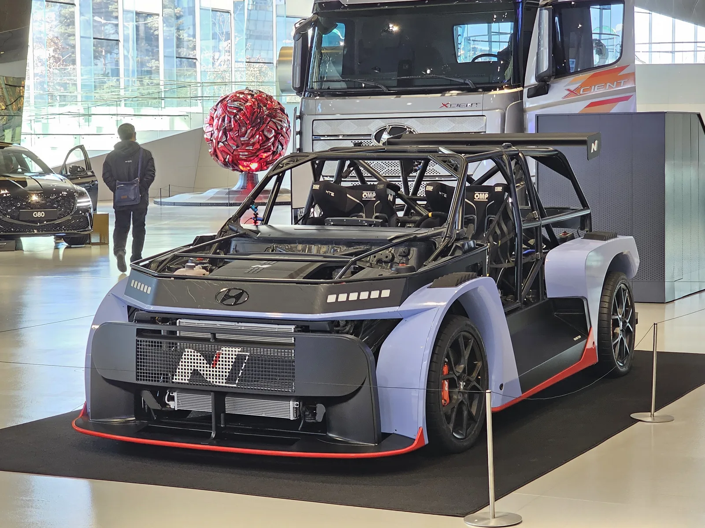
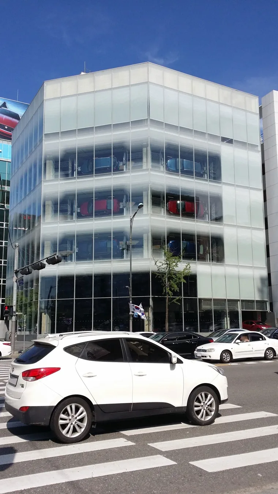
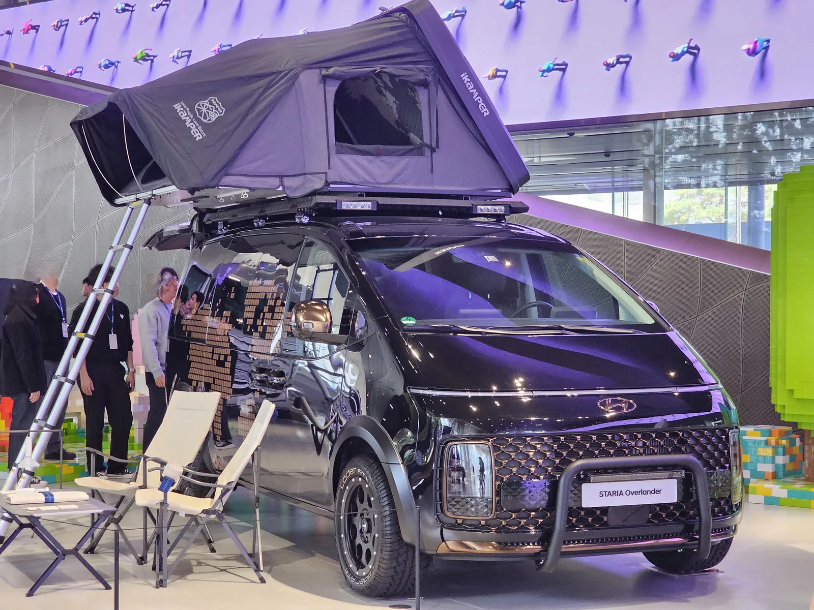
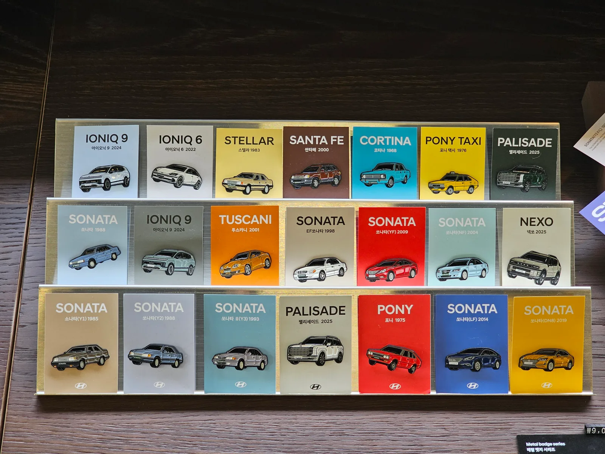
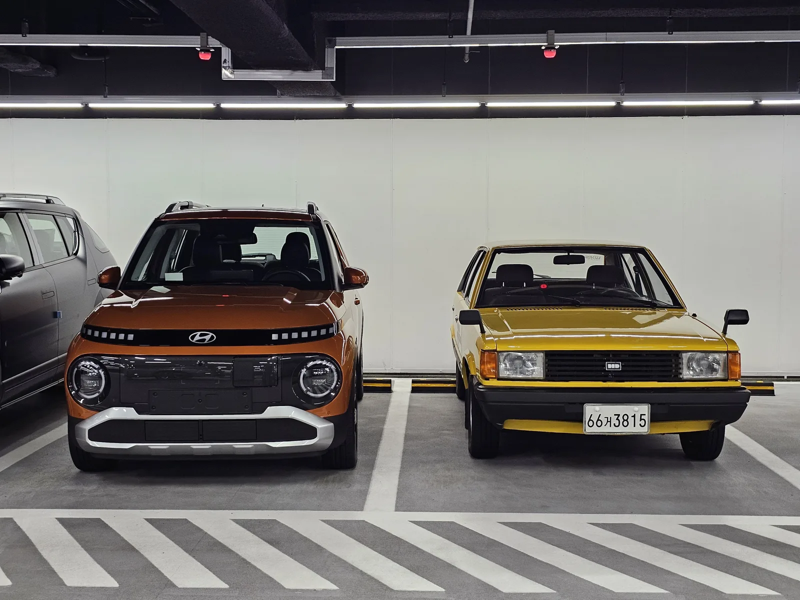

▲ 현대 모터스튜디오 고양에 전시된 RN24 콘셉트카(2025년 2월 촬영). 다큐멘터리 '더 스튜디오'는 이런 전시 공간 6곳의 12년을 기록했다 ⓒ Damian B Oh, CC BY-SA 4.0, Wikimedia Commons
2026년 9월 21일, 현대자동차가 장편 다큐멘터리 영화 '더 스튜디오: 바퀴 위 공간에서, 땅 위의 공간으로'를 개봉했습니다. 2014년 서울에서 처음 문을 연 브랜드 체험 공간 '현대 모터스튜디오'의 12년을 기록한 작품으로, 서울 아트하우스 모모에서 10월 9일까지 특별 상영됩니다. 이 시리즈는 지금까지 제네시스의 할리우드 영화 PPL, 볼보의 드라마 협찬, 기아와 하츠투하츠의 음원 협업처럼 남이 만든 콘텐츠 안에 차를 넣는 방식을 다뤄왔습니다. 이번 건은 방향이 반대입니다. 자동차 회사가 제공자로 이름을 올리고 영화 한 편을 통째로 기획했습니다. 게다가 주인공은 차가 아니라 차를 전시하는 '공간'입니다.
1. 광고가 아니라 '건축 다큐'로 만든 영화
'더 스튜디오'가 공개된 첫 무대는 자동차 행사가 아니라 제18회 서울국제건축영화제였습니다. 공식 초청작으로 처음 관객을 만났고, 이어 이화여대 안의 예술영화관 아트하우스 모모에서 특별 상영에 들어갔습니다. 다음 달에는 제31회 부산국제영화제의 지역 상영 프로그램 '동네방네비프'를 통해 10월 8일과 9일 부산 F1963과 현대 모터스튜디오 부산에서 상영됩니다. 현대차와 보도 매체들이 밝힌 공개 경로는 이 극장·영화제 상영이며, 러닝타임은 발표 자료에 명시되지 않았습니다.
연출은 정다운 감독이 맡았습니다. 조경가 정영선의 작업을 다룬 '땅에 쓰는 시', '위대한 계약' 등 건축·도시를 주제로 한 다큐멘터리를 만들어온 감독입니다. 현대차가 제공하고, 현대차그룹 계열 광고회사 이노션이 기획했으며, 제작은 스튜디오 어빗과 기린그림이 맡았습니다. 영화는 공간을 설계한 디자이너와 건축가, 운영 관계자, 문화예술 관계자, 그리고 방문객의 시선을 오가며 각 모터스튜디오가 지역마다 어떤 건축적 가치와 의미를 갖는지를 따라갑니다.
정 감독은 "현대 모터스튜디오의 공간이 시간성에 따라 얼마나 다양한 아름다움과 의미를 만드는지 보여주고, 관객이 마치 공간을 직접 방문한 듯한 경험을 느낄 수 있도록 고민했다"고 연출 의도를 설명했습니다. 신차 스펙이나 가격 같은 판매 정보가 들어설 자리가 처음부터 없는 기획입니다.
| 항목 | 내용 |
|---|---|
| 제목 | 더 스튜디오: 바퀴 위 공간에서, 땅 위의 공간으로 |
| 장르 | 장편 다큐멘터리 |
| 개봉 | 2026년 9월 21일(월) |
| 첫 공개 | 제18회 서울국제건축영화제 공식 초청 |
| 상영 | 아트하우스 모모 9월 21일~10월 9일 / 부산국제영화제 '동네방네비프' 10월 8~9일 |
| 연출 | 정다운 감독 |
| 제공·기획·제작 | 현대자동차 제공 · 이노션 기획 · 스튜디오 어빗, 기린그림 제작 |
| 러닝타임 | 발표 자료에 명시되지 않음 |

▲ 2014년 서울 도산대로에 문을 연 현대 모터스튜디오 서울(2015년 7월 촬영). 12년이라는 기준점이 바로 이 건물이다 ⓒ Chu, CC BY-SA 4.0, Wikimedia Commons
2. 서울에서 자카르타까지, 모터스튜디오 12년
영화 제목의 12년은 2014년 서울 도산대로에 첫 모터스튜디오가 문을 연 시점부터 셉니다. 이후 현대차는 2016년 스타필드 하남에 하남점을, 2017년 4월 경기 고양에 고양점을 열었고, 같은 해 11월에는 중국 베이징 798 예술구에 첫 해외 거점을 냈습니다. 2021년 4월 8일에는 부산 수영구 망미동의 복합문화공간 F1963 안에 부산점을, 2022년 6월에는 인도네시아 자카르타에 스나얀파크점을 개관했습니다.
지점마다 성격도 다릅니다. 현대차에 따르면 모터스튜디오는 차량 전시 외에 시승 프로그램, 문화 전람, 식음료 공간 등 거점별로 특화된 콘텐츠를 운영해 왔고, 매년 130만 명이 넘는 방문객이 찾고 있습니다. 부산점은 원오원 아키텍츠의 최욱 소장이 설계를 총괄한 디자인 전시 중심 공간으로 문을 열었고, 하남점은 개관 8년 만인 2024년 11월 리뉴얼을 마쳤습니다. 당시 현대차는 모스크바를 포함해 전 세계 7개 거점이라고 소개했지만, 이번 영화 발표에서는 6개 거점을 배경으로 명시했습니다.
| 거점 | 개관 | 비고 |
|---|---|---|
| 서울 | 2014년 | 도산대로, 첫 거점 — '12년'의 기준점 |
| 하남 | 2016년 | 스타필드 하남, 2024년 11월 리뉴얼 |
| 고양 | 2017년 4월 | 경기 고양 |
| 베이징 | 2017년 11월 | 798 예술구, 첫 해외 거점 |
| 부산 | 2021년 4월 8일 | 수영구 망미동 F1963 내, 특별전 개최 장소 |
| 스나얀파크(자카르타) | 2022년 6월 | 인도네시아 |

▲ 현대 모터스튜디오 고양의 스타리아 오버랜더 콘셉트 전시(2024년 4월 촬영). 차를 세워두는 대신 캠핑이라는 생활 장면을 함께 연출했다 ⓒ Damian B Oh, CC BY-SA 4.0, Wikimedia Commons
3. 현대차가 밝힌 제작 의도 — '바퀴 위'에서 '땅 위'로
부제 '바퀴 위 공간에서, 땅 위의 공간으로'가 이 영화의 논지를 요약합니다. 자동차라는 '바퀴 위 공간'에 머물지 않고, 고객의 일상과 지역사회 속에서 호흡하는 '땅 위의 공간'을 만들어 온 과정을 기록했다는 것이 현대차의 설명입니다.
지성원 현대차 브랜드마케팅본부장(부사장)은 "현대 모터스튜디오는 자동차를 넘어 사람과 문화, 지역사회를 연결하는 가치를 모색하기 위한 시도였다"며 "이번 영화를 통해 지난 12년간 공간을 조성해 온 관계자들과 이를 경험한 방문객이 함께 구축해 온 의미가 전해지길 기대한다"고 밝혔습니다. 발언 어디에도 판매나 신차는 등장하지 않습니다. 영화가 설득하려는 대상이 '다음 차를 살 사람'이라기보다 현대차라는 브랜드를 어떤 회사로 기억할지에 가깝다는 뜻입니다.
영화는 한 번 보고 끝나는 이벤트로 설계되지도 않았습니다. 현대차는 개봉에 맞춰 현대 모터스튜디오 부산에서 2026년 10월 초부터 2027년 1월 초까지 특별전 '현대 모터스튜디오 수장고: 12년의 기록'을 엽니다. 건축 모형과 목업(Mock-up), 초기 스케치 등을 통해 영화 속 공간이 만들어진 과정을 실물로 보여주는 전시입니다. 부산국제영화제 상영 장소 중 한 곳이 바로 이 모터스튜디오 부산이라는 점도 계산된 동선으로 읽힙니다. 스크린에서 본 공간에 관객이 실제로 발을 들이게 되는 구조입니다.

▲ 현대 모터스튜디오 서울에서 판매되는 역대 모델 금속 배지(2025년 10월 촬영). 모터스튜디오는 전시장이자 브랜드의 역사를 소비하게 하는 공간이다 ⓒ Damian B Oh, CC BY-SA 4.0, Wikimedia Commons
4. PPL과 무엇이 다른가 — 이 시리즈의 네 번째 방식
이 시리즈에서 다룬 사례를 나란히 놓으면 이번 건의 위치가 분명해집니다. 제네시스는 디즈니 영화 'Freakier Friday'에서 제이미 리 커티스에게 GV60을, 린제이 로한에게 GV80을 태웠고, 볼보는 쿠팡플레이 시리즈에서 김혜수에게 XC90을, 조여정에게 S90을 배정했습니다. 두 경우 모두 이야기는 남이 쓰고, 브랜드는 그 이야기 속 배역에 차를 붙이는 역할이었습니다. 기아는 한 걸음 더 나아가 하츠투하츠의 싱글 'Moonride'를 기획해 RV 블랙 에디션을 곡의 소재로 만들었습니다.
'더 스튜디오'는 이 흐름의 끝에 있지만 성격은 또 다릅니다. 첫째, 기획 주체가 브랜드 쪽입니다. 현대차가 제공하고 그룹 계열 광고회사가 기획했으니, 무엇을 찍을지부터 브랜드가 정했습니다. 둘째, 주인공이 제품이 아닙니다. PPL과 음원 협업은 결국 특정 차종의 노출이 목적이었지만, 이 영화의 피사체는 건물과 그 안의 사람들입니다. 셋째, 유통 경로가 광고가 아니라 건축영화제와 예술영화관, 부산국제영화제입니다. 광고 슬롯을 사는 대신 영화제의 선정을 거쳐 관객을 만나는 방식이고, 이는 광고로는 얻기 어려운 '작품'으로서의 지위를 줍니다.
| 브랜드 | 방식 | 콘텐츠 기획 주체 | 화면 속 주인공 |
|---|---|---|---|
| 제네시스 GV60·GV80 | 할리우드 영화 PPL | 영화 제작사 | 배역이 타는 차 |
| 볼보 XC90·S90 | OTT·드라마 협찬 | 드라마 제작사 | 배역이 타는 차 |
| 기아 RV 블랙 에디션 | 음원·뮤직비디오 협업 | 브랜드·기획사 공동 | 곡의 소재가 된 차 |
| 현대차 모터스튜디오 | 장편 다큐멘터리 제작 | 브랜드(현대차 제공·이노션 기획) | 브랜드 공간과 사람 |
물론 한계도 분명합니다. 예술영화관 한 곳의 3주 특별 상영과 영화제 이틀 상영은 드라마나 뮤직비디오가 만드는 도달 규모와 비교할 수 없습니다. 이 영화는 대중적 화제성보다 건축·디자인에 관심 있는 관객층과 업계, 언론을 향한 기록물에 가깝습니다. 그래서 효과를 판매량이나 조회수로 재기도 어렵습니다. 다만 모터스튜디오 자체가 처음부터 차를 팔기보다 브랜드 경험을 파는 공간으로 기획됐다는 점을 떠올리면, 그 12년을 판매 광고가 아니라 건축 다큐로 정리한 선택은 일관적입니다.

▲ 현대 모터스튜디오 고양에서 나란히 선 캐스퍼 일렉트릭과 포니2 CX(2025년 6월 촬영). 신차와 헤리티지 모델을 한 공간에 두는 것도 모터스튜디오가 브랜드 이야기를 전하는 방식이다 ⓒ Damian B Oh, CC BY-SA 4.0, Wikimedia Commons

▲ 현대 모터스튜디오 고양에 전시된 팰리세이드 캘리그래피(2025년 2월 촬영). 영화는 이 같은 전시 공간을 설계하고 운영한 사람들과 방문객의 시선을 함께 담았다 ⓒ Damian B Oh, CC BY-SA 4.0, Wikimedia Commons
정리하면, '더 스튜디오'는 자동차 브랜드가 콘텐츠에 참여하는 방식이 한 단계 더 이동했음을 보여주는 사례입니다. 제네시스와 볼보가 남의 이야기 속 배역에 차를 실었고, 기아가 노래의 소재로 차를 올렸다면, 현대차는 아예 카메라를 차에서 거두고 자신들이 12년간 지어 온 공간에 돌렸습니다. 차를 한 번 더 보여주는 대신 '현대차는 어떤 공간을 만드는 회사인가'를 영화의 언어로 설명하려는 시도이고, 그 성패는 극장 관객 수보다 부산 특별전을 찾는 발걸음에서 먼저 드러날 것입니다.